Що таке Strażnik
Сервер збирає дані з кількох відкритих джерел, обчислює бали для кожного воєводства і надсилає сповіщення. Застосунок показує мапу, джерело кожного бала й останні 12 годин історії. Не потрібно ні облікового запису, ні власного сервера.
Бали — це показник застосунку, а не ймовірність удару. Жодна окрема стаття чи зона сама рівня не піднімає: поріг досягається лише офіційним повідомленням, серйозним об'єктом близько до кордону або кількома незалежними джерелами одночасно.
1. Встановлення й оновлення
- iPhone: встановіть Strażnik з App Store і прочитайте інструкцію для iPhone — кроки нижче стосуються лише Android.
- Android — найпростіше: встановіть Strażnik з Google Play (Польща та інші країни Європи). Тоді оновлення приходять через магазин, а наступні кроки цього списку можна пропустити — лишається тільки останній.
- Без Google Play: завантажте найновіший Straznik.apk на телефон з Android.
- Відкрийте файл у Завантаженнях. Якщо Android запитає — дозвольте браузеру чи файловому менеджеру встановлювати застосунки з цього джерела.
- Підтвердіть встановлення й відкрийте Strażnik. Дайте системі перевірити файл — не вимикайте Play Protect.
- Дозвольте сповіщення й збережіть своє воєводство в Меню → Налаштування → Мої місця.
Дозвіл «Встановлення невідомих застосунків» — і як його зняти
Уже маєте Strażnik з файлу APK? Версію з Google Play можна встановити поверх — обидві підписані тим самим ключем, тож налаштування й Мої місця лишаються.
Під час встановлення з файлу APK Android встановить його лише після того, як застосунок, що відкриває файл — зазвичай Chrome — отримає дозвіл Встановлення невідомих застосунків. Браузер перерве встановлення й відправить вас до перемикача Дозволити з цього джерела. Це звичайний крок, а не помилка.
Дозвіл стосується лише того одного застосунку, але залишається увімкненим, доки ви його не вимкнете. Варто зняти його після встановлення:
- Налаштування → Застосунки → Спеціальний доступ → Встановлення невідомих застосунків.
- Виберіть застосунок, яким відкривали файл (зазвичай Chrome, позначений «Дозволено»).
- Вимкніть Дозволити з цього джерела.
Швидше: пошукайте невідом у Налаштуваннях. Формулювання трохи різняться між версіями Android і виробниками, але шлях той самий. Зі знятим дозволом Strażnik працює нормально; наступне оновлення попросить дозвіл знову.
Якщо застосунок GitHub перехоплює посилання і завантаження зупиняється, відкрийте посилання у браузері. Є також копія APK у репозиторії.
Оновлення із самого застосунку
Версію з Google Play оновлює магазин — кнопки оновлення в ній немає. Далі йдеться про версію з файлу APK.
Strażnik перевіряє наявність нового випуску при кожному запуску й поверненні на передній план (щонайбільше раз на 30 хвилин). Вікно оновлення показує номер версії та список змін. Вручну: Меню → Налаштування → Мова, текст і версія → ⬆ Перевірити оновлення.
Для звичайного оновлення можна вибрати Пізніше. Під час встановлення застосунок завантажує файл, перевіряє його контрольну суму SHA-256 і передає Android на підтвердження. Встановлюйте новий випуск поверх старого — налаштування й Мої місця зберігаються.

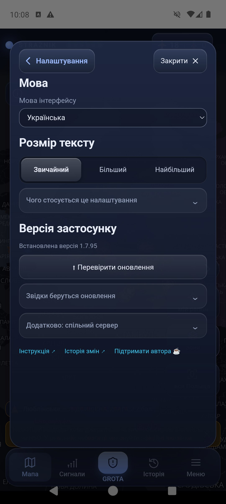
2. Перші кроки: Мої місця, сповіщення, мова
Мої місця
Меню → Налаштування → Мої місця → Відкрити Мої місця. Можна зберегти до 8 місць, наприклад Дім, Робота, Поїздка. Для кожного вибираєте воєводство й позначаєте Стежити за тривогами для цього воєводства. Сповіщення приходять для відстежуваних воєводств; кілька місць в одному воєводстві дають одну підписку. Перше місце визначає «мій регіон» на мапі.
Місце може бути й точним: натискання ◎ Зчитати місцеперебування один раз збереже одноразову точку та її точність. Жодного стеження у фоні немає. Коли застосунок відкритий, Strażnik рахує на телефоні відстань до видимих об'єктів. Сповіщення й далі надсилаються на рівні воєводства.
Дані про місця залишаються на пристрої — кнопка так і називається: Зберегти на пристрої.

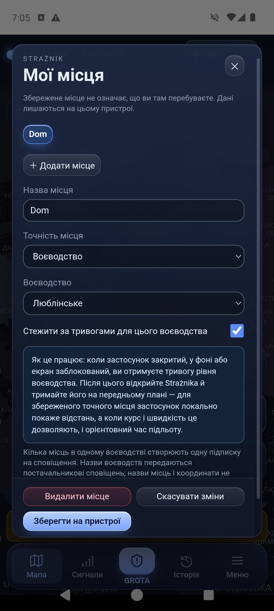

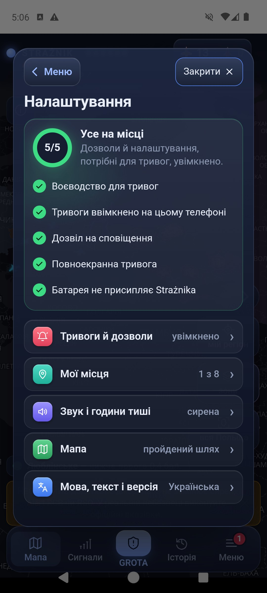

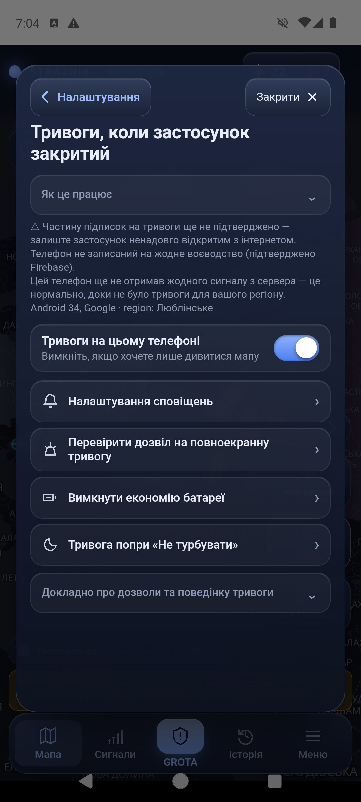

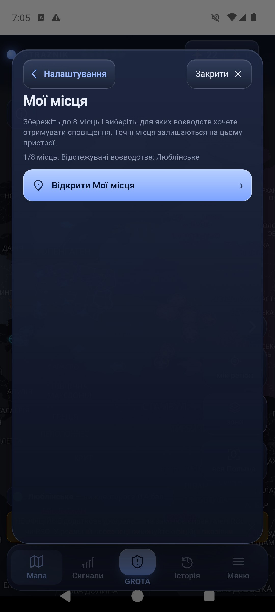

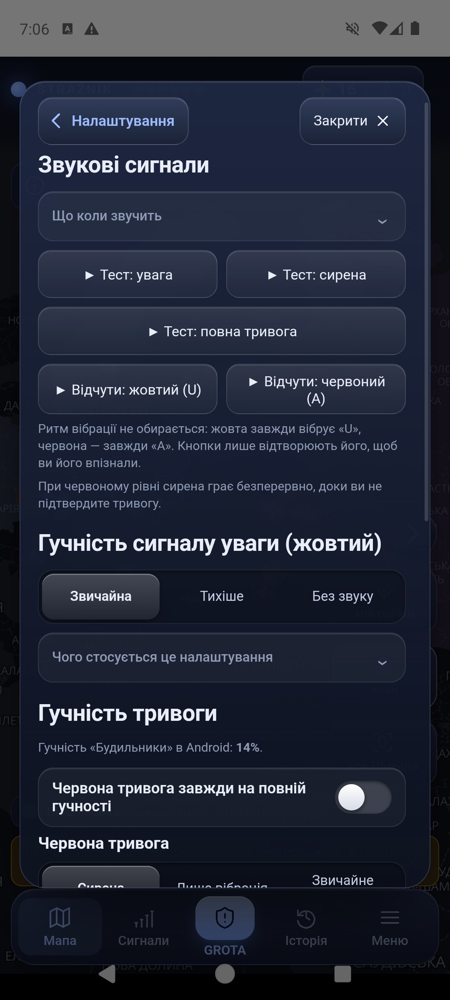

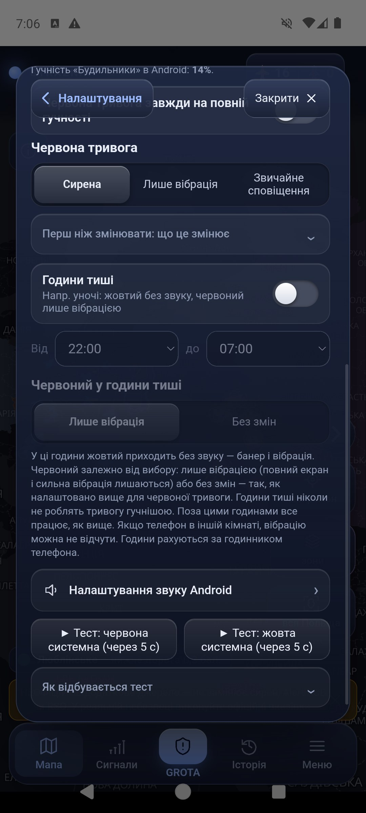

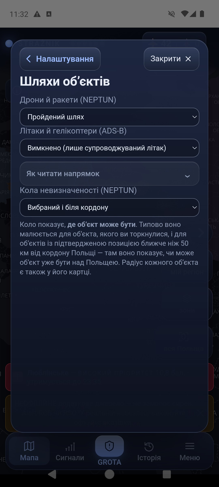
Дозволи Android
Розділ Тривоги й дозволи показує, чи сповіщення готові й для якого регіону. Якщо ви хочете лише дивитися мапу, вимкніть Тривоги на цьому телефоні — телефон буде відписано від усіх воєводств і він перестане отримувати сповіщення про тривоги й нагадування про дозволи. Напис над перемикачем показує, на скільки воєводств телефон підписаний (підтверджено Firebase). Дозволи Android залишаються без змін — застосунок не може їх змінити. Попередження про дозволи на мапі можна закрити хрестиком. Кнопки ведуть просто до системних налаштувань: Налаштування сповіщень, Перевірити дозвіл на повноекранну тривогу і Вимкнути економію батареї. Android 14 і новіші можуть скасувати дозвіл на повноекранну тривогу після оновлення — перевірте його особисто. Четверта кнопка, Тривога попри «Не турбувати», видно лише тоді, коли цей дозвіл ще не надано; він добровільний і описаний нижче, разом із режимом «Не турбувати».
Polski / English / Українська
Меню → Налаштування → Мова, текст і версія → Мова інтерфейсу. Після вибору торкніться Змінити мову й перезапустити — застосунок запуститься новою мовою. Доки ви не виберете мову, застосунок говорить мовою телефона: польська й українська — як є, будь-яка інша — англійська (сайт типово польською). Українська й англійська версії охоплюють інтерфейс, описи об'єктів і підписи на мапі; цитовані повідомлення та заголовки статей залишаються мовою оригіналу.
Розмір тексту
Меню → Налаштування → Мова, текст і версія → Розмір тексту: Звичайний, Більший або Найбільший. Діє відразу, без збереження і без перезапуску. Збільшує всі написи одразу — на панелі, на картках об'єктів, у легенді, на екрані тривоги та в модулі GROTA. Відступи й кнопки залишаються того самого розміру, щоб розмітка не розповзлася і ніщо не вийшло за екран.
На Android це налаштування множиться із системним розміром шрифту (Налаштування → Екран → Розмір шрифту), тож за великого системного шрифту зазвичай вистачає «Звичайний». Написи на самій мапі надходять із сервера мап і це налаштування їх не змінює. На сайті працює також звичайне збільшення у браузері (Ctrl і +). На iPhone навпаки: системний розмір тексту (Налаштування → Екран і яскравість → Розмір тексту) не змінює написів у Strażnik — системний вебпереглядач враховує Dynamic Type лише тоді, коли сторінка про це явно просить, а наша цього не робить. Тож на iPhone це налаштування — єдиний спосіб отримати більший текст.
3. Головний екран
Розкладка має п'ять частин: смугу вгорі з індикаторами джерел і лічильником, знак (i) у лівому верхньому куті мапи, плитки вздовж правого краю мапи, банер «мій регіон» і плаваючу нижню панель.
| Елемент | Що робить |
|---|---|
| STRAŻNIK і шість індикаторів | Індикатори — це джерела: NEPTUN, тривоги UA, ADS-B, RSS, RCB/RSO, PAŻP. Зелений — джерело відповідає, червоний — не відповідає. Індикатор RCB/RSO показує Регіональну систему попередження, через яку надходять офіційні Alert RCB; він зелений лише тоді, коли RSO відповіла протягом останніх хвилин. Торкання індикаторів відкриває опис джерел, а торкання назви — вікно «Про застосунок». Зелений індикатор означає робоче джерело, а не відсутність загрози. |
| Лічильник дронів і ракет | Скільки дронів (зокрема Shahed і розвідувальних) і скільки ракет (крилатих, балістичних і керованих бомб KAB) зараз на мапі — рівно стільки, скільки значків. FPV, MiG-31K і невизначені об'єкти не рахуються; нуль приглушений. Число може раптом упасти вдвічі: джерело прибирає об'єкти цілими пакетами через кілька хвилин без підтвердження, тож падіння не обов'язково означає кінець атаки. Торкання відкриває пояснення. Лічильник — не попередження для воєводства; про це говорять бали й сповіщення. В історії він показує момент, вибраний повзунком. |
| Знак (i) на мапі | Віконце Джерела мапи: звідки об'єкти (NEPTUN, ADS-B) і підкладка (OpenFreeMap © OpenMapTiles © OpenStreetMap). Під час запуску відкривається само й згортається за кілька секунд або після торкання мапи. |
| мій регіон | Кадрує мапу на першому збереженому місці. |
| зони | Вмикає й вимикає шар зон PAŻP. Приглушена плитка — шар вимкнено. |
| вся Польща | Показує Польщу разом з Україною. |
| Банер над нижньою панеллю | Ваш регіон, його рівень і бали. Торкання відкриває картку воєводства. |
| Нижня панель: Мапа Сигнали GROTA Історія Меню | Мапа повертає до головного вигляду; Сигнали відкривають панель; GROTA — найближчі місця укриття (лише в застосунку, розділ 9); Історія прокручує 12 годин; Меню відкриває список нижче. |
| Меню | Налаштування (Тривоги й дозволи, Мої місця, Звук і години тиші, Мапа, Мова, текст і версія), Сповіщення (у застосунку — увімкнути або приглушити; на сайті — сповіщення браузера, розділ 10), Легенда символів і кольорів, Вигляд 3D (висота брили воєводства зростає з балами — також нижче порогу), Чужі літаки (РФ/РБ) (розділ 8), Про застосунок і бали, Інструкція і Підтримати автора (останнього немає у версії з Google Play). |
Налаштування починаються з картки готовності — чи дійде до вас тривога і чого ще бракує, — а під нею п'ять розділів. Більшість змін зберігається одразу, без кнопок «Зберегти» й «Скасувати»; лише мова та адреса власного сервера потребують перезапуску кнопкою у своєму розділі, а редактор Моїх місць має власну кнопку Зберегти на пристрої. Кожне вікно, відкрите з Меню, — Налаштування, Про застосунок, Чужі літаки, Легенда — має вгорі, поруч із «Закрити», кнопку ‹ Меню, яка повертає до Меню; так само діє системна кнопка «назад» на початку Налаштувань. Розділи Налаштувань і вікно Моїх місць мають угорі ‹ Налаштування. З великим текстом кнопка стоїть одразу під «Закрити».
На старті внизу з'являється смуга «НЕОФІЦІЙНЕ додаткове джерело…». Її можна закрити хрестиком — під час тривоги вона повертається. Панелі й вікна закривайте хрестиком, вкладкою Мапа або торканням поруч із ними. Коли ви відкриваєте панель Сигнали або історію, мапа зсувається над відкриту частину екрана, щоб об'єкти не ховалися під панеллю, а після закриття повертається на місце.

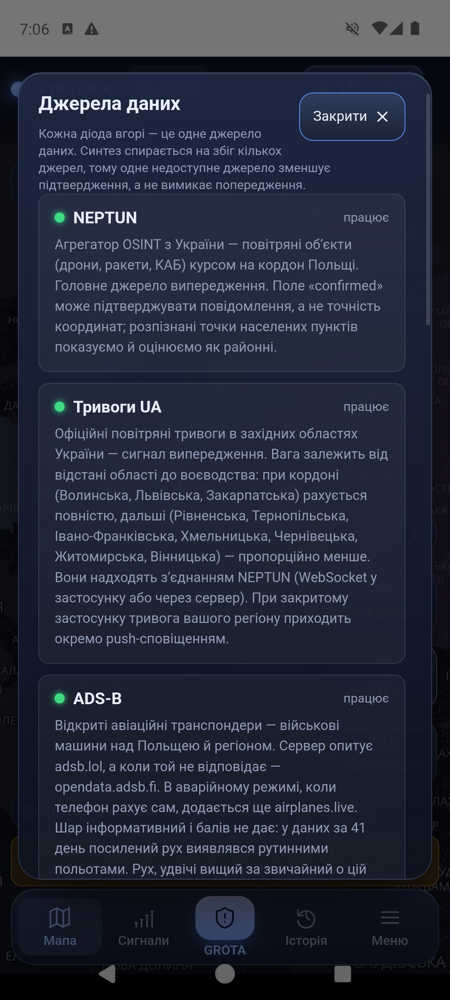

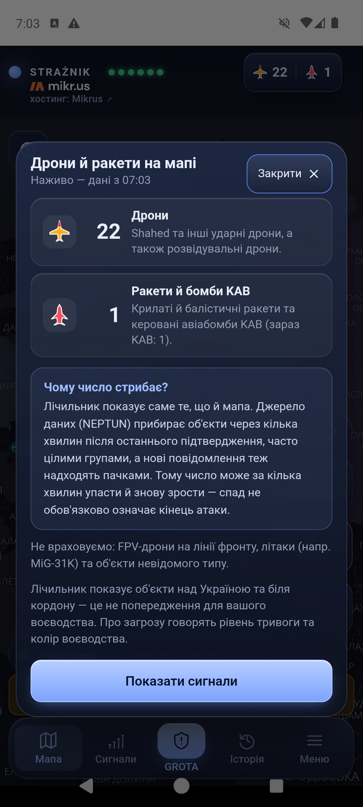

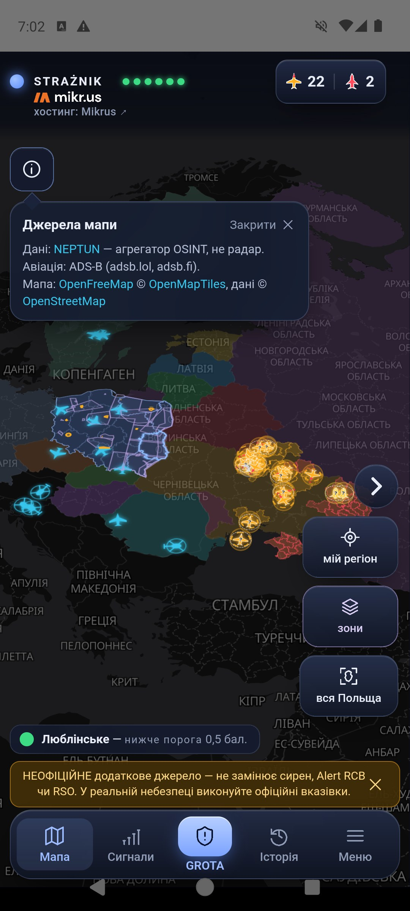

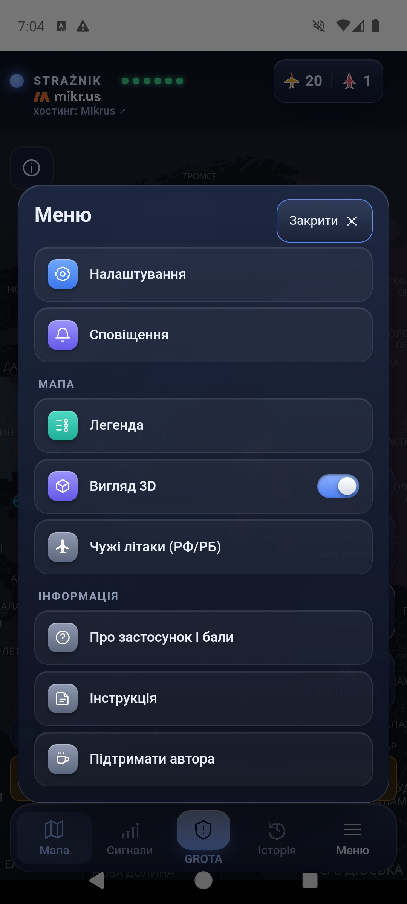

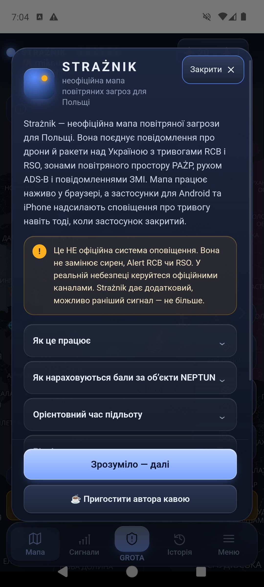
4. Мапа, об'єкти й літаки
Мапу пересувайте пальцем, масштабуйте двома пальцями, об'єктів торкайтеся. Колір воєводства показує його бали за останні 60 хвилин:
| Колір | Значення |
|---|---|
| темно-синій | 0–1,9 бала — спокійно (нижче порога) |
| жовтий | від 2 балів — підвищена увага |
| червоний | від 4 балів і з підтвердженням — високий пріоритет (розділ 11) |
| приглушений, оливковий | колір лише від сусідніх воєводств; картка має пунктирну рамку й напис «піднято сусідством · без тривоги». Такий колір сповіщення не надсилає. |
Об'єкти NEPTUN над Україною мають різні форми — кожну показує легенда:
| Об'єкт | Символ |
|---|---|
| Дрон / БпЛА | жовтий силует із прямими крилами й вирізаним хвостом; червоний ніс і червоний наконечник попереду показують напрямок польоту |
| Дрон Shahed | помаранчеве трикутне крило |
| FPV-дрон | чотири гвинти; локальний, балів не дає |
| Розвідувальний дрон | біло-сірий силует із довгими крилами |
| Крилата ракета | червоний корпус із крилами |
| Балістична ракета | вузький рожевий наконечник |
| Керована авіабомба (КАБ) | жовтий силует бомби |
| МіГ-31К (носій) | фіолетовий літак |
| Невпізнаний об'єкт | сірий ромб зі знаком питання |
Невідомий курс: іконка не обертається, має пунктирне біле кільце і знак питання — вона не вказує напрямку. Лише об'єкти, які зараз додають бали воєводству, мають пульсуюче червоне кільце; решта стоїть спокійно.
Непевна позиція: дрон, положення якого взято з повідомлення «у напрямку …» або з центру населеного пункту, а не з координат, має той самий колір типу, але приглушену заливку й пунктирний контур. Такі об’єкти важать у балах 60% підтверджених (центр населеного пункту — 50%). 19 жовтня біля Львова 11 із 16 треків були саме такими повідомленнями — кілька іконок поруч часто означають один об’єкт, описаний кількома каналами.
Підсвічена рожевим область України з пунктирним контуром має повітряну тривогу, яка зараз додає бали воєводству. Ближчі області видно виразніше, дальші — ледь помітно. Торкання області показує, коли надійшов сигнал і скільки балів він дає якому воєводству.
Коло навколо об'єкта показує, де об'єкт може бути, — а не радіус ураження. Типово коло мають лише об’єкт, якого ви торкнулися, і об’єкти з підтвердженою позицією ближче ніж 50 км від кордону Польщі — там воно показує, чи може об’єкт уже бути над Польщею; далі й для непевних позицій кола зливалися в одну пляму. У Меню → Налаштування → Мапа → «Кола невизначеності» можна вибрати Вибраний і біля кордону, Усі або Вимкнено; радіус кожного об’єкта є також у його картці. Після торкання об’єкта його коло стає чітким і товстішим, а кола інших об’єктів бліднуть — коли поруч кілька дронів, видно, яке коло чиє. Воно складається з невизначеності самого повідомлення і відстані, яку об'єкт міг подолати від останнього повідомлення, тож зростає, доки не надійде нове повідомлення — щонайбільше 15 хвилин, потім перестає зростати, і картка об'єкта про це попереджає. Картка розбиває це число на обидві частини. Ракети, КАБ і балістика мають сталий район, бо джерело не подає їм курсу. Пунктирна лінія — пройдений шлях; малюємо її лише тоді, коли джерело дає позиції, придатні для стеження. У Меню → Налаштування → Мапа → «Шляхи об’єктів» окремо вибираєте для дронів і ракет та для літаків: вимкнено, пройдений шлях або шлях і курс (лінія на 30 хвилин лету дрона чи ракети, 15 хвилин для літака, з точками кожні 5 хвилин). Курс дронів і ракет малюємо лише тоді, коли його виміряно з руху об'єкта. Об'єкт із приблизною позицією (велике коло невизначеності) не має ні шляху, ні курсу — а більшість об'єктів NEPTUN між повідомленнями стоїть на місці, тож лінії з'являються лише в частини з них. Сині літаки й гелікоптери — це військова авіація з відкритим транспондером ADS-B. Об’єкт, позицію якого джерело визначило з цілі й курсу, а не зі спостереження, має коло щонайменше 40 км, а картка пише, що він може бути будь-де на маршруті. Так само коло зростає й у перегляді історії — від віку повідомлення у вибрану мить.
Час під іконкою (наприклад «7 хв») — це вік останнього повідомлення про цей об'єкт. NEPTUN збирає повідомлення людей, а не відбитки радара: об'єкт лишається там, де був, доки хтось не повідомить про нього знову, а іноді наступного повідомлення не буває. Підпис з'являється через п'ять хвилин, і іконка поступово блідне — що блідіша, то старіша інформація. Через годину іконка помітно згасла. Тож нерухомі іконки означають відсутність нових повідомлень, а не завислу мапу. Картка об'єкта показує рядок останнє повідомлення, а після чверті години додає, що відтоді об'єкт міг переміститися.
Легенду відкриває перший значок угорі, а закриває кнопка ✕ Закрити в її заголовку. Шість груп розгортаються по одній — назви всіх видно одразу, тож щоб знайти один символ, не треба гортати цілу легенду.

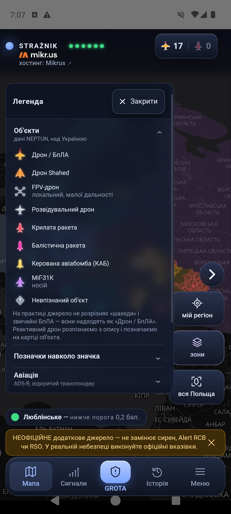
Картки об'єктів і літаків
Торкання об'єкта відкриває міні-картку в лівому нижньому куті й обводить об'єкт на мапі білим кільцем. Кнопка зі стрілкою (Розгорнути картку) збільшує її на більшу частину екрана й згортає назад, хрестик закриває.
Картка дрона чи ракети показує тип, повідомлений район, кількість підтверджень, достовірність, район можливого положення, курс і відстань від кордону Польщі. Час підльоту (ETA) з'являється лише для позицій, придатних для такого обчислення. Коли джерело позначає позицію як район повідомлення, картка пише «приблизний район повідомлення — немає підтвердженого маршруту й часу підльоту», а відстань є оцінкою. Коли джерело визначило позицію за назвою цілі й курсом, картка пише «курс на ціль: …» і додає, що продовження траси веде в бік Польщі, — це не означає, що об'єкт летить на Польщу. Курс на Польщу, який минає найближчу ділянку кордону більш ніж на 50°, картка описує як «у бік віддаленішої ділянки кордону». Ілюстрації об'єктів згенеровані ШІ й не можуть служити для визначення моделі.
Під назвою картка має позначку «підтверджена позиція» (координати від джерела) або «непевна позиція». Унизу рядок «Бали зараз» показує, скільки балів об’єкт зараз додає кожному воєводству. Коли якомусь не додає нічого, картка пояснює чому: ліміт NEPTUN у цьому воєводстві (8 балів) уже вичерпано або ту саму точку вже враховано з іншого повідомлення. У перегляді історії це бали з вибраного моменту.
Картка літака чи гелікоптера показує позивний, реєстрацію, країну, модель, призначення, висоту, швидкість і курс. Фото показує приклад машини цієї моделі — автор, джерело й ліцензія вказані під ним. 📍 стежити за шляхом малює слід польоту. Рядок сигнал каже, звідки взялася позиція: ADS-B передає сама машина, а MLAT обчислюють наземні приймачі з різниці часу надходження сигналу — поза їхньою зоною, наприклад над Білоруссю, така позиція може бути на десятки кілометрів осторонь, і картка про це попереджає. Висота, швидкість і курс надходять з борту в обох випадках. Коли повідомлення вимагало б неможливого стрибка — машина не подолала б цю відстань за такий час — Strażnik не переносить іконку: вона лишається на останній достовірній позиції, такий відрізок не додається до шляху, і картка про це каже. Мапа не показує літаків із вимкненим транспондером.

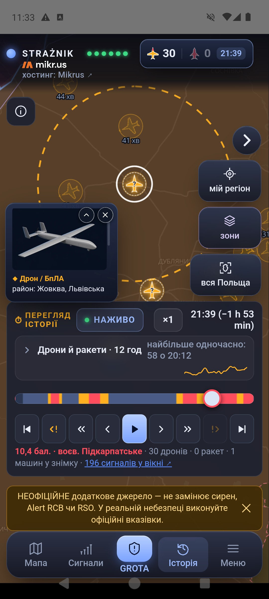

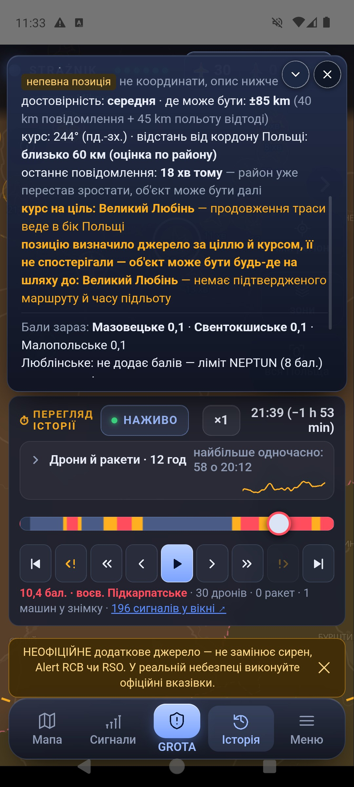

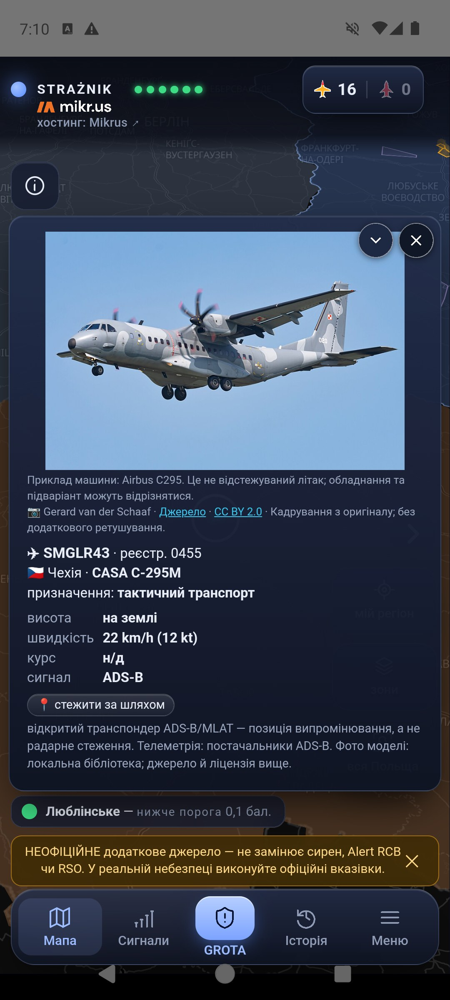
5. Зони PAŻP на мапі
Плитка зони показує активні зони повітряного простору з добового плану Польського агентства аеронавігаційних послуг (PAŻP). Зона, що стоїть давно або вже була активна на початку спостереження, має спокійний фіолетовий контур. Зона, увімкнена нещодавно, вже під час спостереження Strażnika, жовта й має 3D-блок.
Торкання зони відкриває її опис: тип і що він означає, відколи Strażnik її бачить, резервація до (кінець сьогоднішнього вікна в добовому плані — зону можуть продовжити) та діапазон висот. Кнопка з назвою воєводства веде до його картки, бо у воєводство, повністю вкрите зоною, важко влучити пальцем на мапі.
Зони, що накладаються: торкання відкриває найменшу зону під пальцем, а решту в цьому місці показано кнопками «Інші зони в цьому місці».
Сам шар зон балів не додає. Бали дає лише рідкісна зона D, R, NPZ або ADHOC — правила у розділі про бали за зони.

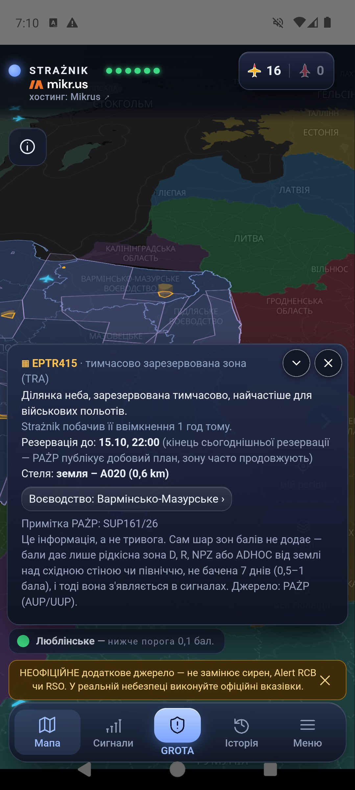

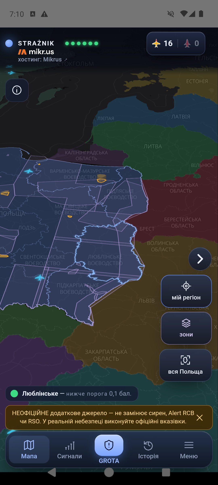

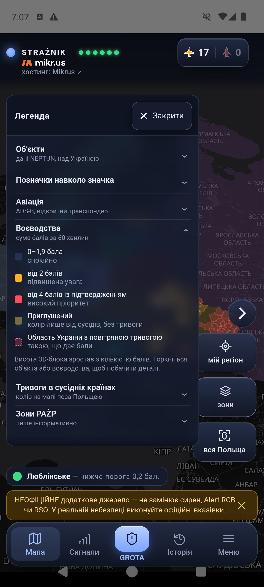
6. Панель сигналів
Вкладка Сигнали відкриває картки воєводств. Ваш регіон іде першим і має підпис «мій регіон». Кожна картка показує бали, рівень, підсумок «складається з» (напр. «0,9 ТРИВОГА UA») і зони PAŻP над воєводством. Торкання картки розгортає список її сигналів, а наступне — згортає; у режимі історії так само.
Кожен рядок сигналу показує джерело, його внесок у балах, заголовок (стаття відкривається як посилання), вік сигналу та його вагу. Сигнал тримає повну вагу 30 хвилин, а потім втрачає її до нуля на 60-й хвилині — саме це означає напис «вага 64%». Перекреслене число — це номінальне значення, яке не зараховано, бо сигнал згасає або клас джерела досяг свого ліміту. Числа в підсумку округлюються поодинці, тому їхня сума може відрізнятися від балів на 0,1.
Сигнал без балів залишається видимим з поясненням:
- Повторення офіційної тривоги — стаття, яка лише розповідає про Alert RCB (називає RCB, «тривога для…», цитує тривогу), коли тривога RCB чи RSO для будь-якого воєводства надійшла до 4 годин раніше. Бали лишаються статті з інформацією понад тривогу: дрон над Польщею, порушення простору, вибух, уламки, сирени, пошуки. Стаття про кінець загрози («загрози немає») теж без балів (з 1.7.99).
- Історичний матеріал / наслідки — річниця, суд, відбудова.
- Скасовано RCB і Після скасування тривоги RCB — скасована тривога RCB та статті про неї.
- Тривогу RCB ще не скасовано — тривога RCB діє до скасування, а скасування може надійти за кілька годин. Наші власні сигнали згасають задовго до того, і мапа виглядає спокійно, тому цей запис прямо каже, що офіційно тривога ще триває. Він зникає після скасування, коли закінчується чинність запису в RSO (RCB часто так завершує тривогу без окремого скасування) або через дванадцять годин. Коли тривога завершується із закінченням чинності без скасування, протягом години замість неї стоїть запис «Тривога RCB, оголошена о 09:30, завершилася о 10:59 (без скасування)» — щоб вона не зникала без пояснення.
- Репортаж про попередню подію — сервер прочитав статтю, і вона описує щось давніше за годину.
- Не вдалося прочитати статтю — без балів — текст не вдалося отримати; посилання лишається.
Запис СУСІДИ — це бали, перенесені із сусіднього воєводства (розділ 11).

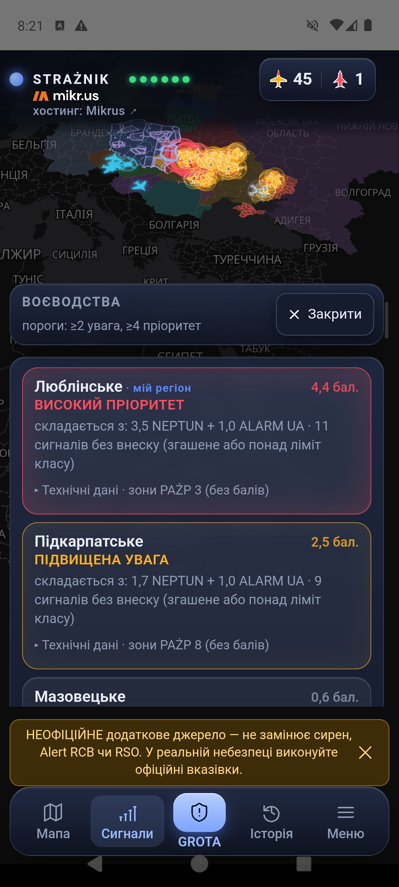
Нижче панель має два списки спостережень без балів: Об'єкти ≤ 250 км від кордону (NEPTUN) і Військова авіація (ADS-B) над сходом Польщі. Це відкриті дані транспондерів, а не стеження за ворожою авіацією. Вони походять із безкоштовного відкритого агрегатора adsb.lol (ліцензія ODbL): його опитує сервер, а в аварійному режимі, коли телефон рахує сам, — сам телефон. Коли adsb.lol не відповідає, шар порожній. Шар інформативний і балів не дає. Там, де вони є, картка воєводства пропонує ще Камери в регіоні — це дорожні камери, а не спосіб виявляти повітряні об'єкти. Від 1.7.88 це лише список із посиланнями: попереднього перегляду ми в себе не показуємо, бо правила worldcam.pl цього не дозволяють. Дотик до плитки відкриває камеру на джерелі.

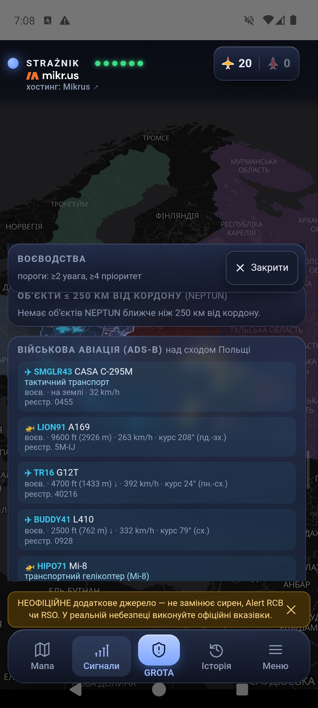
![Тестовий екран повної тривоги від 21 жовтня 2026 року: ВИСОКИЙ ПРІОРИТЕТ, воєв. Люблінське, 2,6 бала у вікні 60 хв, одразу під результатом кнопка ПІДТВЕРДЖУЮ — вимкнути тривогу, поле Що робити: перейдіть в укриття або в кімнату без вікон і стежте за повідомленнями RCB, рядок Найближче: Дрон / БпЛА · 132 km, три причини — два дрони NEPTUN курсом на кордон Польщі (131,9 km і близько 170 км, оцінка по району) та Alert RCB (RSO), процитований польською, про російський повітряний напад на Україну — напис Повний список сигналів — на панелі та примітка, що це неофіційний сигнал](screens/1800/alarm-uk.jpg)

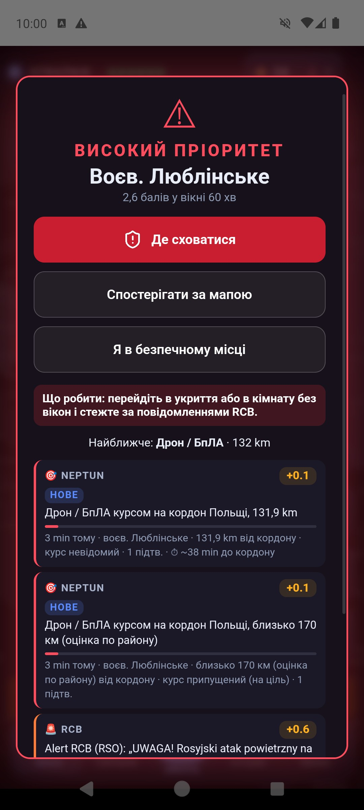
7. Історія за 12 годин
Вкладка Історія відкриває перегляд історії. Доріжка повзунка пофарбована рівнем у кожну мить, тож одразу видно, коли щось відбувалося. Тягніть повзунок: мапа, кольори, об'єкти й літаки показують обрану мить, а підпис дає час і кількість хвилин назад. Під повзунком — воєводство з найбільшою кількістю балів у ту мить, кількість дронів, ракет і машин у знімку та посилання «N сигналів у вікні», яке відкриває панель для цієї миті.
Графік за 12 годин (від 1.7.95) розташований над повзунком, на тій самій осі часу: кількість дронів як середнє за 30 хвилин на тлі сирих стовпчиків, а ракети й бомби KAB — червоні крапки внизу. Типово він згорнутий до одного рядка з найбільшим значенням — торкніться, щоб розгорнути; застосунок запам'ятає вибір. Біля позначки повзунка видно середнє для тієї миті, а торкання графіка переносить повзунок туди. Графік рахує те саме, що лічильник у верхній панелі, тож провали зазвичай означають, що джерело прибрало пакет об'єктів, а не кінець атаки.
Під повзунком є ряд кнопок: −12 год (початок), тривога назад (початок попередньої тривоги), −10 і −1 хвилина, ▶ відтворення й пауза, +1 і +10 хвилин, тривога вперед (наступна тривога) та кінець (найновіший знімок). Утримання ±1 і ±10 прокручує далі. На вузькому екрані або з великим текстом підписи під кнопками ховаються й лишаються самі значки. ×1 у заголовку перемикає швидкість відтворення на ×2 і ×4.
З 10.10.2026 перегляд історії показує зони PAŻP на той момент: кожен знімок зберігає, які зони діяли, тож видно й ті, що згодом зникли з переліку, і відкриті під час події — PAŻP змінює весь набір раз на добу о 6:00. Раніше зони в історії були приховані, бо повзунок малював би сьогоднішні над ситуацією кількагодинної давності. Для моментів до цієї зміни запису немає: тоді зони приховані, кнопка зони зникає, а панель історії каже про це прямо.
У режимі історії панель має заголовок ПЕРЕГЛЯД ІСТОРІЇ, а час сигналів рахується від обраної миті («36 хв раніше»). НАЖИВО у заголовку смуги, вкладка Мапа або системна кнопка «назад» повертають поточний вигляд.
Історію завантажуємо на пристрій один раз, і прокручування працює локально, без запиту до сервера за кожним рухом пальця. Знімки зазвичай робляться щохвилини — це відтворення збережених зрізів, а не безперервний запис.

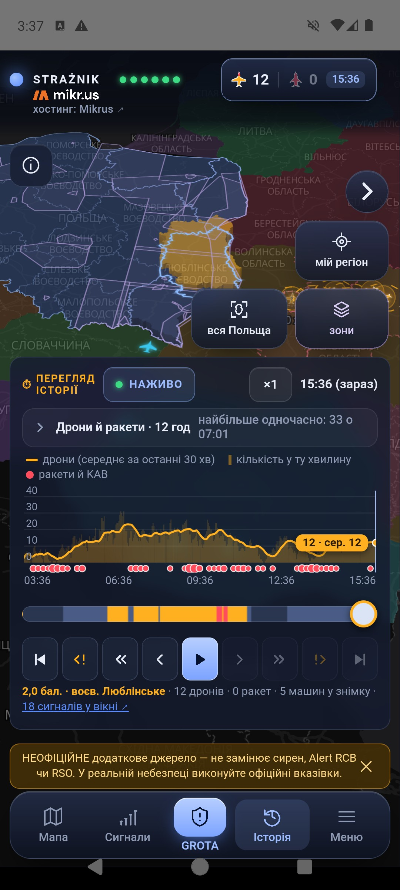

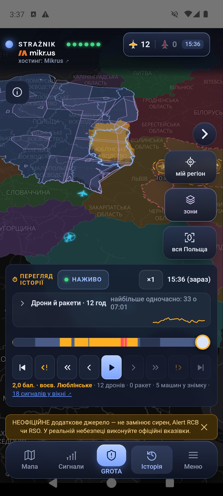

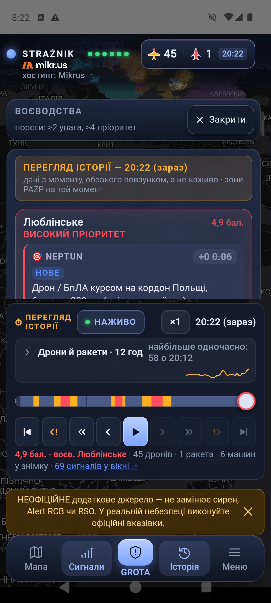
8. Чужі літаки над східним флангом
Іконка літака вгорі відкриває список військових літаків із російською чи білоруською реєстрацією, видимих у відкритих даних ADS-B/MLAT над східним флангом. Панель має дві частини: зараз у зоні і журнал — увійшли / зникли із зони за останні 12 годин, разом із часом, коли застосунок був закритий.
У режимі історії панель іде за обраною миттю. Приглушений літак на мапі — це його остання записана позиція щонайбільше за 2,5 хвилини до того. «Зник» означає втрату сигналу в даних, а не посадку чи збиття. Ці спостереження балів не додають, а порожній список не означає порожнього неба — багато машин летить із вимкненим транспондером.

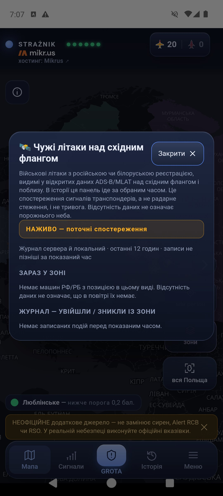
9. Тривоги й сповіщення
| Рівень | Що відбувається |
|---|---|
| нижче 2 балів | Інформація на мапі та в панелі, без сповіщення. |
| жовтий, від 2 балів — ПІДВИЩЕНА УВАГА | Сповіщення й короткий сигнал уваги на звичайній гучності сповіщень. Поважає тихий режим і «Не турбувати». Гучність цього сигналу налаштовується окремо, без впливу на червону тривогу — див. нижче. |
| червоний, від 4 балів і з підтвердженням — ВИСОКИЙ ПРІОРИТЕТ | Сирена, вібрація і повноекранна тривога там, де система це дозволяє. Сирена грає по колу, доки ви не торкнетеся ПІДТВЕРДЖУЮ на екрані тривоги або Wycisz alarm у сповіщенні — щонайдовше 15 хвилин. Гучність «Будильники» піднімається щонайменше до половини; з увімкненою опцією повної гучності — до максимуму. Попередня гучність повертається після вимкнення. На Android у Меню → Налаштування → Звук і години тиші → Червона тривога можна вибрати Сирена (типово), Лише вібрація (повний екран і миготіння лишаються) або Звичайне сповіщення (банер, короткий звук і вібрація, без повного екрана й без обходу «Не турбувати»). |
Коли телефон дзвонить, а коли ні
- Сповіщення приходять лише для відстежуваних воєводств із Моїх місць.
- Воєводство мусить мати щонайменше 1 бал власних сигналів. Колір лише від сусідів не дзвонить.
- Перенесення від сусідів може закрити поріг щонайбільше на один щабель: власні бали нижче жовтого плюс сусід дають щонайбільше жовтий.
- Без повторів: якщо бали спадуть і знову перетнуть той самий поріг протягом 60 хвилин після сповіщення, зміниться лише мапа. Виняток: новий Alert RCB/RSO. Перехід на вищий рівень, із жовтого на червоний, сповіщає завжди.
- У відкритому застосунку звук іде за тими самими правилами, що й сповіщення, а не за кольором мапи — для кожного відстежуваного воєводства, а не лише для першого місця.
- Сповіщення, яке спізнилося понад 10 хвилин (наприклад, після повернення зв'язку), показуємо беззвучно з підписом «затримано на … хв».
- Текст сповіщення починається з години надсилання («10:54 · …») — тієї, коли сервер визнав загрозу, а не тієї, коли повідомлення дійшло. Ту саму годину показує годинник у кутку сповіщення та екран повноекранної тривоги.
- Утримання 10 хвилин: коли бал падає нижче порога, рівень і колір тримаються ще 10 хвилин від останнього перевищення, щоб не блимати, коли бал коливається біля 2. Картка воєводства тоді пише «утримується до …», а історія показує те саме, що жива мапа. Скасування RCB знімає утримання одразу. Бали — інша річ: сигнал рахується повністю 30 хвилин і згасає протягом наступних 30, навіть коли об’єкта на мапі вже немає.
- Коли застосунок відкритий, тривога показується в ньому, а в шторці лишається тихе сповіщення. Це не дубль: без нього Google вважає термінові повідомлення зайвими й може затримувати наступні на хвилину й довше. У Меню → Налаштування → Тривоги й дозволи поруч із часом останнього сигналу видно, скільки він ішов і чи Google знизив йому пріоритет.
Меню → Налаштування → Звук і години тиші має ▶ Тест: увага, ▶ Тест: сирена і ▶ Тест: повна тривога. Ці тести грають усередині вікна застосунку. Застосунок для Android має ще ▶ Тест: червона системна і ▶ Тест: жовта системна: через 5 секунд приходить справжнє сповіщення із сиреною або сигналом уваги, тож можна заблокувати екран і побачити тривогу над блокуванням. Жоден тест не перевіряє дороги push-сповіщення із сервера.
Тривоги приходять польською. Текст сповіщення — заголовок, що робити і причини — сервер пише польською, незалежно від мови, вибраної в застосунку. Рівень і назву воєводства легко впізнати, а подробиці є в застосунку вашою мовою.
Гучність червоної тривоги
Сирена використовує гучність Android «Будильники», а не «Дзвінок» чи «Медіа». Червона тривога піднімає її щонайменше до половини. Перемикач Червона тривога завжди на повній гучності типово вимкнений; коли ви свідомо його ввімкнете (застосунок попросить підтвердження), сирена звучатиме на максимумі, також уночі. Поточний рівень показано в тій самій вкладці, а Налаштування звуку Android відкриває системні регулятори гучності. У застосунку Меню → Сповіщення відкриває стан сповіщень.
Вібрація і годинник
Вібрація говорить абеткою Морзе: жовтий — це «U» (· · —, як «Увага»), червоний — «A» (· —, як «Атака»), з повторами. Хто не знає Морзе, розпізнає їх за ритмом: два короткі й довгий — жовтий, короткий і довгий — червоний; жодного не сплутаєте зі звичайним SMS. Той самий візерунок має сповіщення, відкритий застосунок і сайт у Chrome на Android. Кнопки ▶ Відчути: жовтий (U) і ▶ Відчути: червоний (A) у розділі Звук і години тиші лише відтворюють ці ритми — нічого ними не обирається. У застосунку для Android (від 1.7.94) вони вібрують так, як справжній сигнал: жовтий — як сповіщення, тож у беззвучному режимі мовчить, а застосунок пояснює чому; червоний — як тривога, зокрема в беззвучному режимі. Якщо вимкнете вібрацію каналу в налаштуваннях сповіщень Android, застосунок теж про це скаже. На сайті в Chrome вібрацію дає браузер, і в беззвучному режимі її немає. На iPhone власних візерунків вібрації немає — iOS цього не дозволяє.
Годинник і браслет. Від версії 1.7.93 червона тривога доходить і до спареного годинника з Wear OS — раніше Android її туди не передавав. Браслети й годинники з власним застосунком (наприклад, Mi Fitness, Zepp, Garmin Connect, Galaxy Wearable) покажуть її, якщо в їхніх налаштуваннях сповіщень дозволите Strażnik. Годинник вібрує по-своєму, тож ритму «U» і «A» на руці зазвичай не відчуєте. Ми не перевірили кожну модель — перевірте свою кнопкою ▶ Тест: червона системна.
Жовтий сигнал будить уночі — що з цим робити
У Меню → Налаштування → Звук і години тиші є Гучність сигналу уваги (жовтий) з трьома налаштуваннями: Звичайна, Тихіше (приблизно вдесятеро тихіше) і Без звуку (лишаються банер і вібрація). Це стосується лише жовтого. Червона має власний вибір Червона тривога (тільки Android): Сирена (типово), Лише вібрація — змовкає сама сирена, а вібрація, повний екран і миготіння лишаються — або Звичайне сповіщення — червона приходить як жовта: банер, короткий звук і вібрація, без повного екрана, а в режимі «Не турбувати» може не дійти. Для обох тихіших режимів застосунок запитає підтвердження, бо з вимкненим екраном і телефоном в іншій кімнаті таку тривогу можна не помітити. Опція повної гучності тоді неактивна (немає чого підсилювати); саму сирену почуєте кнопкою Тест: сирена. На iPhone цього вибору немає: iOS не дозволяє вимкнути звук окремого виду сповіщень. На Android налаштування діє і при відкритому застосунку, і при згаслому екрані, бо жовтий іде тоді на окремий канал сповіщень. На iPhone воно змінює лише звук у відкритому застосунку: гучність push-сповіщення вибирає система, і застосунок на неї не впливає.
Години тиші (Android, від 1.7.95)
Якщо вдень ви хочете чути тривоги, а вночі вистачає вібрації, більше не треба щовечора щось перемикати. У Меню → Налаштування → Звук і години тиші увімкніть Години тиші й виберіть час: Від … до (типово 22:00–07:00; проміжок може переходити через північ). У ці години жовтий приходить без звуку — лишаються банер і вібрація. Для червоного ви вибираєте Червоний у години тиші: Лише вібрація (типово) — сирена замовкає, а повний екран і сильна вібрація лишаються — або Без змін, тобто так, як налаштовано вище для червоної тривоги.
Години тиші ніколи не роблять тривогу гучнішою: якщо червоний зазвичай має лише вібрацію або звичайне сповіщення, так і лишається. Поза вибраними годинами все працює як зазвичай. Години рахуються за годинником телефона, а налаштування діє і при відкритому застосунку, і при вимкненому екрані — у години тиші сповіщення йдуть окремими, тихими каналами. Ми перевірили це на емуляторі Pixel, але ще не вночі на справжній тривозі. Вібрацію телефона, що лежить в іншій кімнаті, можна не відчути. На iPhone годин тиші немає — там звук сповіщення визначає сервер.
Другий спосіб, доступний у системі просто зараз: увімкніть на ніч «Не турбувати». Ми перевірили це вимірюванням на Android 14 — звичайний режим «Не турбувати» стишує жовтий, а червоний проходить: сирена грає, екран засвічується, повноекранна тривога з’являється над блокуванням. На iPhone те саме робить Режим фокусування (наприклад, Сон): червона тривога позначена як термінове сповіщення й пробивається, жовта — ні.
Одна умова на Android: червона тривога проходить тому, що «Не турбувати» типово пропускає будильники. Якщо в Налаштування → Не турбувати → Будильники та інші переривання вимкнути пункт Будильники, сирена змовкне, а екран не засвітиться — це ми виміряли окремо. Тоді допоможе кнопка Тривога попри «Не турбувати» у Меню → Налаштування → Тривоги й дозволи: після надання доступу до режиму «Не турбувати» тривога покажеться на весь екран і засвітить екран. Звук це не поверне.
Як це працює технічно: сервер надсилає push-сповіщення через Firebase для кожного відстежуваного воєводства, також коли застосунок закритий, а екран заблокований. Тривоги приходять і після нічного перезапуску телефону, ще до розблокування. «Примусова зупинка» в налаштуваннях Android — а на деяких телефонах Xiaomi, Huawei чи Oppo також очищення застосунку зі списку останніх — блокує доставку до повторного відкриття застосунку; на таких телефонах налаштування попереджають про це. Окрема пастка — присипляння застосунку оболонкою виробника: на телефонах Samsung списки «сплячі застосунки» та «глибоко сплячі застосунки» можуть зупинити доставку push зовсім, попри увімкнені сповіщення й робочий інтернет — бо це окреме налаштування. Від версії 1.7.91 Strażnik попереджає про це в налаштуваннях, коли виявить обмеження батареї на такому телефоні, і показує час останнього отриманого сигналу з сервера. Аварійний режим: коли сервер не відповідає, відкритий застосунок запускає вбудований рушій і сам опитує джерела; щохвилини перевіряє, чи сервер повернувся. Аварійний режим працює лише при відкритому застосунку й не читає текстів статей у ЗМІ, тому ЗМІ показуємо без балів; текст повідомлення RCB зі сторінки gov.pl він читає так само, як сервер.
Де сховатися — GROTA
Після натискання ПІДТВЕРДЖУЮ — вимкнути тривогу сирена змовкає, а екран тривоги показує три кнопки: Де сховатися, Спостерігати за мапою і Я в безпечному місці. Strażnik ніколи не перемикає екран сам — вибираєте ви. Кнопка ПІДТВЕРДЖУЮ стоїть одразу під заголовком, нижче — «Що робити» одним реченням і щонайбільше три причини; повний список сигналів — на панелі. Через 15 хвилин сирена, вібрація й блимання екрана вимикаються самі — щоб берегти батарею й не перегрівати телефон, — а екран лишається з приміткою «Автоматично вимкнено через 15 хв». Сповіщення на панелі має заголовок, щонайбільше три причини й один рядок «що робити · неофіційне джерело».
Де сховатися відкриває модуль GROTA одразу на вкладці ТЕПЕР: він визначає ваше місцеперебування й показує найближчі пункти укриття з відкритого переліку Державної пожежної служби Польщі (dane.gov.pl) — відкриті цілодобово, відкриті у визначені години та «на запит» — з відстанню й маршрутом пішки, велосипедом або автомобілем. GROTA починає завантажуватися у фоні щойно з'являється тривога, тож відкривається одразу після підтвердження. Поза тривогою відкрийте її кнопкою GROTA посередині нижньої панелі; вона має також вкладки Мапа, Місця, Підготовка і Правила.
- Перелік пунктів і пошук найближчого працюють без інтернету. Маршрут дорогами потребує мережі; без неї ви побачите відстань по прямій.
- GROTA охоплює лише Польщу. Поза кордоном вона показує повідомлення замість маршруту й дає вказати місце вручну.
- Це перелік місць, а не гарантія: пункти, відкриті «у визначені години» чи «на запит», можуть бути зачинені. Запитайте управителя будівлі заздалегідь.
- GROTA говорить українською, англійською та польською — мову виберете в її вкладці Zasady (Правила). Вона є в застосунках для Android та iPhone; на сайті її немає.
На iPhone тривоги працюють інакше: без повного екрана, сирена грає один раз, а вимкнений дзвінок робить її беззвучною — хіба що в налаштуваннях увімкнете Увімкнути тривогу попри вимкнений звук (критичне сповіщення Apple). Тоді червоний пролунає й на беззвучному телефоні, а iOS позначить сповіщення як критичне. Подробиці й налаштування, які варто перевірити, є в інструкції для iPhone (польською та англійською).
10. Сайт і сповіщення браузера
Та сама мапа працює на straznik.eu. Угорі є також кнопки Завантажити застосунок, Інструкція і Пригостити кавою. Вкладка браузера показує іконку Strażnika.
Сповіщення браузера: спершу збережіть воєводство в Меню → Налаштування → Мої місця, потім відкрийте Меню → Сповіщення й дозвольте сповіщення. Вони приходять також при закритій вкладці — одне на тривогу, без безперервної сирени. Безперервна сирена з вібрацією звучить лише у відкритій вкладці на червоному рівні. На iPhone сповіщення працюють тільки для сайту, доданого на екран «Початок».
Як вимкнути: відкрийте Меню → Сповіщення (або Меню → Налаштування → Тривоги й дозволи) і виберіть Вимкнути сповіщення в цьому браузері. Strażnik тоді прибере підписку на сервері та в браузері. Сам дозвіл браузера знімається в його налаштуваннях — повідомлення підкаже шлях для вашого браузера, наприклад:
У будь-якому браузері: відкрийте його Налаштування, у полі пошуку введіть «налаштування сайтів» (або просто «сайт») → Дозволи → знайдіть straznik.eu → Сповіщення → Блокувати.
Chrome на Android: ⋮ → Налаштування → Налаштування сайтів → Сповіщення → straznik.eu → Блокувати.
11. Звідки беруться бали
Бали рахуються у 60-хвилинному вікні. Перші 30 хвилин сигнал тримає повну вагу, потім втрачає її лінійно до нуля. Кожен клас джерел має ліміт, тож багато статей або обласних тривог про одне й те саме не додаються без обмежень. Повторне спостереження того самого об'єкта NEPTUN не рахується як новий об'єкт.
| Джерело | Що враховуємо | Бали / ліміт |
|---|---|---|
| NEPTUN — об'єкти | Тип, кількість об'єктів, відстань від кордону, курс, достовірність, кількість підтверджень, стан спостереження та якість позиції. Район повідомлення ×0,6, розпізнаний центр населеного пункту ×0,5. | разом до 8 |
| RCB / RSO | Alert RCB про повітряну загрозу, опублікований у RSO. Рахується 60 хвилин від виявлення, незалежно від дати дії запису. Скасування в RSO обнуляє тривогу одразу. Від 17.09.2026 RCB надсилає три види повідомлень, і вони важать відповідно: «ситуацію моніторять» 1,5; «триває масований напад… реагуйте на сигнали тривоги» 3; «загроза нападу з повітря, знайдіть безпечне місце» 4,5. Пізніша тривога не додається до попередньої: рахується поточна, а надлишок сильнішої згасає протягом 10 хвилин. Від 24.09.2026 додатково читається текст повідомлення дня на gov.pl/rcb: RSO іноді передає лише частину отримувачів алерту (17.09 і 24.09 загубилося Підкарпатське воєводство), тож воєводства, яких бракує, беруться зі сторінки — так само й тоді, коли застосунок рахує сам, без сервера. Стаття на gov.pl про тривогу, яку RSO вже скасувала, балів не дає. | 1,5 / 3 / 4,5, ліміт 4,5 |
| Тривоги в областях України | Повітряна тривога в західній області України; вага спадає з відстанню (таблиця нижче). Повна вага перші 30 хвилин тривоги, потім половина, доки вона триває; кінець тривоги обнуляє бали одразу. | до 1, ліміт 1 |
| ЗМІ (RSS) | Повітряний об'єкт плюс подія: 0,5 бала; однозначне оперативне повідомлення (сирени, тривога, підняте авіаційне чергування, перехоплення): 1 бал. Сервер читає всю статтю: репортаж про попередню подію або нечитана стаття дають 0. Навчання, річниці, судові справи й переказані тривоги RCB теж дають 0. | 0 / 0,5 / 1, ліміт 1 |
| ADS-B | Щонайменше 3 військові літаки й понад подвійний звичайний рух о цій порі доби (семиденна норма). Від 13.09.2026 лише інформативно: за 41 день даних посилений рух виявлявся рутинними польотами. | 0 |
| Зони PAŻP | Лише рідкісні зони D, R, NPZ, ADHOC від землі вгору над сходом або північчю (нижче). | 0,5 (північ 1), ліміт 1 |
| Балтійські ЗМІ | Повітряний інцидент (порушення простору, збиття) у Литві, Латвії чи Естонії: 0,5 бала. Оголошена повітряна тривога для населення там — це слід у панелі: Литва 0,3, Латвія 0,18, Естонія 0,12. Канали: LRT і 15min, LSM, ERR. Відбій знімає внесок. Заголовок, який досі оголошує тривогу (напр. звужену до меншого регіону), не є відбоєм; стаття, опублікована до відбою, не відкриває тривогу знову, а репортаж про тривоги в інших країнах не є тривогою в країні редакції. Стан каналів і остання тривога — у вікні «Джерела» (торкніться діод). | тривога 0,12–0,3; інцидент 0,5 |
| Простір сусідів | Закриття повітряного простору в Литві, Естонії та на півночі Румунії. | 0,3, ліміт 0,6 |
| Інші сусіди (спостереження) | Подія в повітряному просторі Молдови, Румунії, Словаччини, Чехії, Швеції чи Угорщини. Країна підсвічується на карті, запис потрапляє в панель — але не додає жодного бала і сам нічого не підвищує. Чому — нижче. | 0 |
Шість нових сусідів — поки що лише спостерігаємо
Від 3 жовтня 2026 року Strażnik читає також медіа Молдови, Румунії, Словаччини, Чехії, Швеції та Угорщини — по два канали на країну. Подія в повітряному просторі будь-якої з них підсвічує цю країну на карті; дотик відкриває картку з повідомленням і посиланням на джерело.
Ці шість країн не додають балів. Жодного. Вони не можуть підвищити рівень, не увімкнуть сповіщення й не змінять колір вашого воєводства. Причина проста: чеські та словацькі редакції пишуть про чужий повітряний простір частіше, ніж про власний, тому спершу кілька тижнів перевіряємо, чи наш фільтр не бере подію в Данії або над Польщею за їхню. Коли це підтвердиться, ваги буде увімкнено — і ми напишемо про це в історії змін. Литва, Латвія та Естонія працюють без змін і дають бали, як дотепер.
Стан цих каналів видно у вікні Джерела (торкніться індикаторів угорі) окремим рядком «Інші сусіди — спостереження». Принагідно на карті з’явилася Швеція, якої раніше не було.
Тривоги в областях України — вага за відстанню
Вага спадає плавно: при кордоні 1; 50 км 0,7; 100 км 0,5; 150 км 0,3; 220 км 0,15; 320 км 0,08. Область рахується для обох воєводств, кожного за своєю відстанню. Час рахується від реального початку тривоги: повна вага 30 хвилин, потім половина, доки вона триває. Коли область уже 3 хвилини відсутня у списку тривог, тривога вважається завершеною — бали й підсвічення зникають одразу, а панель показує час закінчення:
| Область | Люблінське: км | вага | Підкарпатське: км | вага |
|---|---|---|---|---|
| Львівська | 0 | 1,00 | 0 | 1,00 |
| Волинська | 0 | 1,00 | 55 | 0,68 |
| Закарпатська | 135 | 0,36 | 0 | 1,00 |
| Івано-Франківська | 100 | 0,50 | 50 | 0,70 |
| Рівненська | 70 | 0,62 | 110 | 0,46 |
| Тернопільська | 100 | 0,50 | 115 | 0,44 |
| Хмельницька | 160 | 0,28 | 190 | 0,21 |
| Чернівецька | 225 | 0,15 | 180 | 0,24 |
| Житомирська | 220 | 0,15 | 265 | 0,12 |
| Вінницька | 280 | 0,11 | 305 | 0,09 |
Навіть тривоги в усіх областях одночасно дають щонайбільше 1 бал — обласні тривоги це одна інформація, а не кілька незалежних підтверджень.
ЗМІ: читаємо всю статтю
Заголовок може ввести в оману: стаття, опублікована о 9:46 із заголовком про сирени, може описувати ніч. Тому сервер завантажує текст статті й шукає час події — годину («перед 4 ранку», «о 4.19»), слова на кшталт «уночі», «перед світанком», «учора» або інший день тижня. Якщо подія сталася понад годину до публікації, статтю показуємо як репортаж про попередню подію, і вона дає 0. Посилання Google News ведуть на сторінку згоди Google, якої сервер не приймає — натомість він шукає ту саму статтю у власному RSS-каналі видавця. Якщо тексту прочитати не вдається, стаття дає 0 і лишається в панелі з посиланням.
Після скасування тривоги RCB у воєводстві статті про сирени чи тривогу дають 0 протягом 4 годин, якщо RCB не оголосить нової тривоги. Підсумкові заголовки на кшталт «Неспокійний ранок…» рахуються щонайбільше на 0,5 бала.
Об'єкти NEPTUN і відстань
Ваги типів: балістична 3,0; МіГ-31К 2,6; крилата 2,4; КАБ 1,8; Shahed 1,4; дрон 1,1; розвідувальний 0,15; FPV 0. Вагу множимо на квадратний корінь із кількості об'єктів, відстань, курс і якість даних: достовірність (висока ×1,0, середня ×0,6, низька ×0,35), кількість повідомлень (одне ×0,7, два ×0,9, три–чотири ×1,1, п'ять і більше ×1,25), стан спостереження (підтверджений ×1,1, непевний ×0,85, свіжий ×0,7) і якість позиції. Відстань діє плавно: 0 км ×1,7; 15 ×1,6; 45 ×1,3; 80 ×1,0; 110 ×0,7; 150 ×0,4; 200 ×0,25; 250 ×0,1; далі 0. Об'єкт дає бали кожному воєводству в межах 250 км, кожному — за відстанню до нього, а не лише найближчому. Від 1.7.97 так само рахує застосунок, коли сервер не відповідає й він рахує сам. Курс у межах ±50° від напрямку на Польщу рахується повністю, від 50° до 70° — дедалі слабше, далі — ніяк. За невідомого курсу об'єкт отримує половину ваги і лише до 150 км. Ракета або МіГ-31К у межах 60 км від кордону щонайменше з двома підтвердженнями й точковою позицією дають щонайменше 2 бали (за невідомого курсу 1 бал).
Дрон біля кордону (від 18.10.2026): дрон або Shahed у межах 30 км від воєводства, щонайменше з двома повідомленнями й точковою позицією, дає цьому воєводству щонайменше 2 бали, тобто жовтий — навіть без відомого курсу, якщо курс не показує польоту від Польщі. Відстань рахуємо окремо до кожного воєводства, тож дрон поблизу двох попереджає обидва. Цей додаток не переходить до сусідніх воєводств, а одного повідомлення не досить.
Час підльоту
Картка об'єкта оцінює час до кордону Польщі й до кордону обраного воєводства, а не до адреси. Використовує швидкість, подану джерелом, виміряну з послідовних позицій або типову для класу об'єкта, і віднімає 2,5 хвилини на затримку даних. Для приблизних позицій ETA не показуємо. За курсу, відомого або обчисленого з руху об'єкта (а не припущеного з назви цілі), щонайменше двох підтверджень, середньої чи високої достовірності й точкової позиції ETA ≤ 10 хв піднімає внесок об'єкта до 2 балів, а ≤ 5 хв — до 4 балів.
Коли вмикається червоний
Самих 4 балів не досить. Від 23 вересня 2026 року червоний потребує ще й підтвердження — одного з двох:
- Тривога RCB зі словами «знайдіть безпечне місце» — найвищий із трьох рівнів, які RCB використовує від 17 вересня. Така тривога вмикає червоний сама, бо держава прямо каже людям ховатися.
- Реальний ударний об'єкт курсом на Польщу — ракета, Shahed, керована авіабомба або бойовий дрон, час якого до кордону становить 15 хвилин або менше чи який ближче ніж 50 км. Друга умова — запобіжник на випадок реактивного дрона (Geran-3/4), якого джерело не описало як реактивний: для нього 50 км — це менш ніж 7 хвилин. Позиції, поданої лише як район (центр області) з похибкою понад 30 км, не досить — таке повідомлення дає бали, але червоного не відкриває (від 15.10.2026). Не відкриває його й точка «на ціль»: об'єкт із припущеним курсом і районною позицією, яку джерело визначає з цілі й курсу, а не зі спостереження (від 18.10.2026). Повідомлення про об'єкт має бути не старшим за 25 хвилин.
Час рахуємо зі швидкості, типової для класу об'єкта, після відрахування 2,5 хвилини запасу, тож поріг перераховує себе сам: гвинтовий дрон — близько 55 км, реактивний дрон — близько 140 км, крилата ракета — майже 250 км. Розвідувальні дрони підтвердженням не є — вони не б'ють.
Без підтвердження воєводство лишається жовтим навіть при 5 балах, і Strażnik пише про це на картці: «немає підтвердження об'єктом — лишається жовтий». Чому: до 23 вересня тривога RCB про моніторинг ситуації разом із тривогами в областях України та повідомленнями ЗМІ могла зробити воєводство червоним, хоча на мапі нічого не було ближче ніж за 80 км. На даних від 1 вересня нове правило лишає червоний у двох випадках із восьми — саме там, де об'єкт був за 15 хвилин від кордону.
Хвиля об'єктів
Три різні об'єкти курсом на Польщу протягом 15 хвилин і ближче ніж 150 км разом додають 0,5 бала. Кілька об'єктів одночасно означають більше, ніж кожен окремо, а повторні повідомлення про той самий об'єкт хвилі не роблять. Від 1 вересня хвиля траплялася чотири рази, щоразу під час реальної події.
Перенесення до сусідніх воєводств
Воєводство, яке має щонайменше 2 бали із сигналів, інших ніж регіональний Alert RCB та об'єкти NEPTUN, передає 40% сусідам, 16% наступному колу і так далі. Офіційна тривога RCB не передається — її зону визначив той, хто її оголосив. Об'єкти NEPTUN теж ні (з 1.7.99): кожен об'єкт сам дає бали кожному воєводству в радіусі 250 км за власною відстанню, а раніше той самий дрон рахувався в сусіда вдруге — 19.10.2026 Свентокшиське з 1,1 власного бала мало через це 9,5 бала й червоний колір. Тож передаються тривоги в областях України, ЗМІ, авіація та зони. Та сама подія не повертається через перенесення: стаття чи обласна тривога, віднесена до двох сусідніх воєводств, рахується повністю в кожному, але не додається вдруге як перенесення. Перенесення — це регіональний контекст, а не прогноз маршруту об'єкта; колір лише від сусідів приглушений і не дзвонить. Додаток із мінімуму для дрона біля кордону лишається у своєму воєводстві — сусіди отримують частку лише зі звичайних балів об'єкта.
Які зони PAŻP дають бали
PAŻP публікує щодня десятки зон: військові навчання, стрибки з парашутом, планери, комерційні дрони. Якби кожна давала бали, мапа була б жовтою щодня. Тому:
| Тип зони | Значення | Дає бали? |
|---|---|---|
| D — небезпечна зона | стрільби, навчання | так, за трьох умов нижче |
| R — зона обмежень | вхід лише з дозволом | так, за тих самих умов |
| NPZ — зона заборони польотів | закрита територія | так, за тих самих умов |
| ADHOC | створена того самого дня | так, за тих самих умов |
| TSA / TRA | навчання, заплановані заздалегідь, майже щодня | ні — лише на мапі |
| ATZ | звичайний рух навколо аеродрому | ні — не показуємо |
| примітки PJE, GLD, CLN, BSP, UAV | парашути, планери, цивільні дрони | ні — відфільтровано |
Зона D, R, NPZ або ADHOC дає бали лише тоді, коли виконує всі три умови: сягає від землі вгору, той самий позначник не з'являвся протягом останніх 7 днів, і зона лежить над східним кордоном або на півночі. Вага низька (0,5 бала), бо закриття неба — це військове рішення, а не незалежний вимір загрози: сама зона рівня ніколи не піднімає.
На півночі зона важить 1 бал. NEPTUN дивиться на Україну й для Поморського, Західнопоморського, Вармінсько-Мазурського та Куявсько-Поморського воєводств не дає нічого. Залишаються зони, ЗМІ, RCB і закриття простору балтійськими сусідами. Правило безпеки не змінюється: зона 1 бал + повідомлення ЗМІ 1 бал = поріг жовтого; від 15.09.2026 балтійський інцидент зі ЗМІ важить лише 0,5 бала і рахується лише свіже повідомлення (до 30 хвилин) про те, що відбувається зараз, тож зона + Балтика — це 1,5 бала; сама зона — це й далі тиша.
12. Обмеження й розв'язання проблем
- Червона діода — одне джерело не відповідає. Решта працює; синтезу просто бракує підтверджень. Коли NEPTUN не відповідає понад 2 хвилини, над мапою з’являється смуга «NEPTUN не відповідає з…». Об’єкти з останнього повідомлення лишаються на мапі, бо порожня мапа під час збою джерела виглядала б як спокій.
- Порожня мапа або всі діоди червоні — перевірте з'єднання і спробуйте іншу мережу. Антивіруси чи проксі, які перехоплюють HTTPS, можуть блокувати з'єднання застосунку; не вимикайте захист назавжди, а додайте виняток для straznik.eu.
- Немає сповіщень — перевірте Мої місця (відстежуване воєводство), дозволи, канали сповіщень, налаштування батареї й чи не було примусової зупинки застосунку. Тест звуку не перевіряє дороги push-сповіщення із сервера.
- Об'єкт є у списку, але не на мапі — сигнал живе у 60-хвилинному вікні, а позиції беруться з поточного знімка. Зникнення об'єкта не доводить, що його збили.
- Неповна картина — NEPTUN це агрегатор OSINT, а не радар; ADS-B бачить лише відкриті транспондери; повідомлення й статті можуть запізнюватися. Відсутність балів не доводить відсутності загрози.
13. Власний сервер — необов'язково
Порожнє поле Меню → Налаштування → Мова, текст і версія → Додатково: спільний сервер означає типовий сервер Strażnika. Вказуйте власну адресу лише тоді, коли самі запускаєте сумісний сервер і його сповіщення. Потрібен HTTPS із сертифікатом, якому довіряє система. Як запустити сервер, описано в README (англійською). Запуск власного сервера для інших людей потребує ліцензії від автора.
14. Приватність і джерела
Повна політика приватності (польською та англійською) — що лишається на вашому пристрої, що бачить сервер і які треті сторони беруть участь у доставці даних.
Немає облікового запису, реклами й аналітики. Мої місця, їхні назви та одноразові точки місцеперебування зберігаються лише на пристрої; резервне копіювання Android для застосунку вимкнено. Сервер і постачальник сповіщень отримують назви відстежуваних воєводств та ідентифікатор підписки пристрою — ніколи точного місцеперебування. Винятки є в GROTA: для маршруту позиція й обрана точка йдуть на відкритий сервер маршрутів FOSSGIS, а не до нас, а з завантаження офлайн-мапи «Навколо місця» наш сервер бачить місцевість з точністю до квадрата приблизно 12 на 20 км (подробиці).
Сервер і постачальники мап, сповіщень, фотографій та даних отримують звичайні мережеві запити й можуть вести технічні журнали. Читаючи статті, сервер завантажує сторінки видавців як звичайний браузер, не приймаючи згоди на файли cookie.
Дані: NEPTUN · ADS-B © adsb.lol (ODbL) · RCB / RSO · PAŻP · регіональні та балтійські ЗМІ · зони простору сусідів. Мапа: OpenFreeMap, © OpenStreetMap. Автори фотографій літаків вказані в картках.